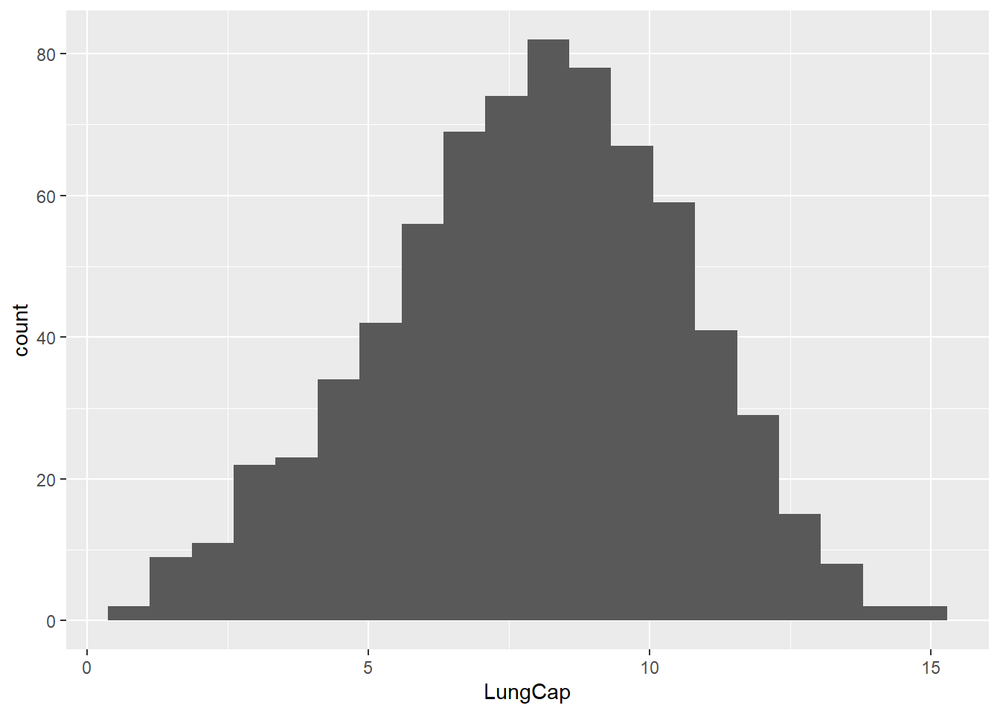
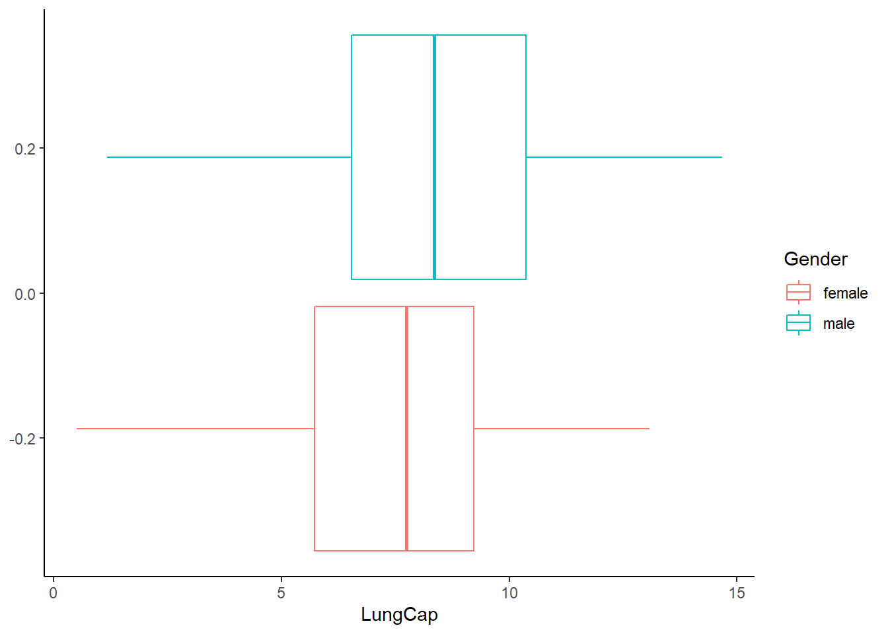
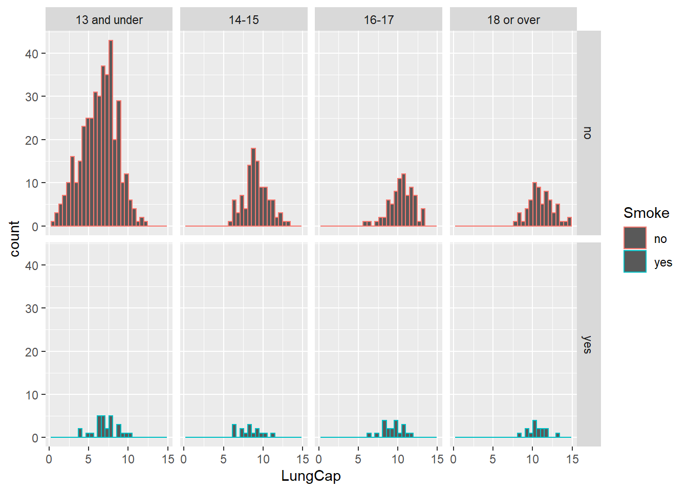

Code
library(tidyverse)
library(readxl)
library(ggplot2)
library(stats)
knitr::opts_chunk$set(echo = TRUE)library(tidyverse)
library(readxl)
library(ggplot2)
library(stats)
knitr::opts_chunk$set(echo = TRUE)RE <- read_excel("_data/LungCapData.xls")
RE# A tibble: 725 × 6
LungCap Age Height Smoke Gender Caesarean
<dbl> <dbl> <dbl> <chr> <chr> <chr>
1 6.48 6 62.1 no male no
2 10.1 18 74.7 yes female no
3 9.55 16 69.7 no female yes
4 11.1 14 71 no male no
5 4.8 5 56.9 no male no
6 6.22 11 58.7 no female no
7 4.95 8 63.3 no male yes
8 7.32 11 70.4 no male no
9 8.88 15 70.5 no male no
10 6.8 11 59.2 no male no
# … with 715 more rows##A
RE %>%
ggplot(aes(LungCap))+
geom_histogram(bins=20)
The histogram looks close to normal distributed.
RE %>%
ggplot(aes (LungCap, color=Gender)) +
geom_boxplot() +
theme_classic() 
The probability density of the female is higher than the males.
Mean_Smoker <- RE %>%
group_by(Smoke) %>%
summarise(mean = mean(LungCap))
Mean_Smoker# A tibble: 2 × 2
Smoke mean
<chr> <dbl>
1 no 7.77
2 yes 8.65ggplot(RE, aes(LungCap,Smoke))+
geom_boxplot()
From this sample, it appears that smokers have a higher mean lung capacity than non-smokers.
RE<-RE %>%
mutate(Category = as.factor(case_when(Age <= 13 ~ "13 and under",
Age == 14 |Age ==15 ~ "14-15",
Age == 16 | Age==17 ~ "16-17",
Age >= 18 ~ "18 or over"
)))
RE# A tibble: 725 × 7
LungCap Age Height Smoke Gender Caesarean Category
<dbl> <dbl> <dbl> <chr> <chr> <chr> <fct>
1 6.48 6 62.1 no male no 13 and under
2 10.1 18 74.7 yes female no 18 or over
3 9.55 16 69.7 no female yes 16-17
4 11.1 14 71 no male no 14-15
5 4.8 5 56.9 no male no 13 and under
6 6.22 11 58.7 no female no 13 and under
7 4.95 8 63.3 no male yes 13 and under
8 7.32 11 70.4 no male no 13 and under
9 8.88 15 70.5 no male no 14-15
10 6.8 11 59.2 no male no 13 and under
# … with 715 more rowsRE %>%
ggplot(aes( LungCap, color = Smoke)) +
geom_histogram()+
facet_grid(Smoke ~ Category)`stat_bin()` using `bins = 30`. Pick better value with `binwidth`.
The people who smoke are few in age group of “less than or equal to 13”. From the result we can say age is inversely proportional to the lung capacity.
Form the above data we can say the output are pretty similar that smokers have a lower lung capacity compared to non-smokers
correlation and covariance between lung capacity and age
cov(RE$LungCap,RE$Age)[1] 8.738289cor(RE$LungCap,RE$Age)[1] 0.8196749Covariance is positive and indicates that age and lung capacity are directly related. Correlation is also positive,from these results we can conclude that the lung capacity increases with age.
x <- c(0:4)
freq <- c(128, 434, 160, 64, 24)
convictions <- data_frame(x, freq)Warning: `data_frame()` was deprecated in tibble 1.1.0.
ℹ Please use `tibble()` instead.convictions# A tibble: 5 × 2
x freq
<int> <dbl>
1 0 128
2 1 434
3 2 160
4 3 64
5 4 24convictions <- convictions %>% mutate(probability = freq/sum(freq))
convictions# A tibble: 5 × 3
x freq probability
<int> <dbl> <dbl>
1 0 128 0.158
2 1 434 0.536
3 2 160 0.198
4 3 64 0.0790
5 4 24 0.0296Probability of exactly 2 is 19.75%
a <-head(convictions,2)
sum(a$probability)[1] 0.6938272Probability that a randomly selected inmate has fewer than 2 prior convictions : 69.38%
a <-head(convictions,3)
sum(a$probability)[1] 0.891358The probability that a randomly selected inmate has 2 or fewer prior convictions : 89.13%
a <-tail(convictions,2)
sum(a$probability)[1] 0.108642The probability that a randomly selected inmate has more than 2 prior convictions? : 10.86%
WE <- weighted.mean(convictions$x,convictions$probability)
WE[1] 1.28642The expected value for the number of prior convictions : 1.28
The variance is 0.857 and the standard deviation is 0.925
AB <- (sum(freq*((x-WE)^2)))/(sum(freq)-1)
AB[1] 0.8572937sqrt(AB)[1] 0.9259016